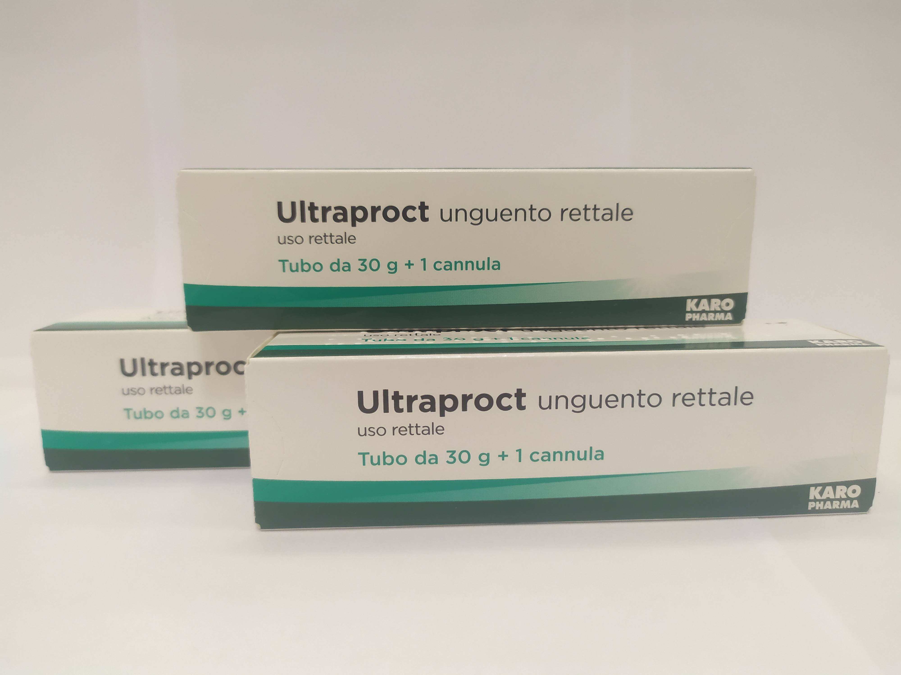

Контактна інформація:
Ціна: 420 грн/уп.
В наявності
Виробник: Італія
Ціна: 420 грн/уп.
В наявності
Саме в FarmItal ви можете купити Ультрапрокт мазь, Ultraproct unguento в Україні. Гарантовано якісні ліки з Італії!
Доставка Ultraproct unguento здійснюється транспортними компаніями, терміни виконання замовлення обумовлюються менеджером Фармітал. Ви можете замовити Ультрапрокт мазь у містах: Одеса, Херсон, Чернігів, Сєверодонецьк, Бердянськ, Бровари, Дніпро, Вінниця, Київ, Слов'янськ, Полтава, Краматорськ, Біла Церква, Кам'янське, Маріуполь, Чернівці, Олександрія, Кам'янець-Подільський, Львів, Запоріжжя, Кропивницький, Житомир, Івано-Франківськ, Суми, Черкаси, Костянтинівка, Мелітополь, Кривий Ріг, Рівне, Луцьк, Нікополь, Павлоград, Ужгород, Кременчук, Лисичанськ, Хмельницький, Тернопіль, Харків, Миколаїв, а також в інших населених пунктах України.
мазь біла або жовтувата напівпрозора утубах, супозиторії жовтувато-білі;
1 г мазі містить флуокортолону півалату 0,92мг, флуокортолону капроату 0,95 мг і цинхокаїну гідро хлориду 5 мг;
допоміжні речовини: 2-октилдодеканол, олія рицинова, олія рицинова гідрогенізована, полі етиленгліколь 400 монорицин олеат, олія цитрус-трояндова ароматизована ;
Мазь ректальна, супозиторії ректальні.
Гемороїдальні вузли, поверхневі тріщини заднього проходу, проктит.
Перед застосуванням Ультрапрокту® (що рекомендується одразу ж після дефекації) ділянку задньопрохідного отвору слід ретельно очистити. Поліпшення, що спостерігається зазвичай досить швидко, неповинно стати приводом для передчасного припинення курсу лікування. Для запобігання рецидивам, навіть після повного зникнення скарг Ультрапрокт ® слід застосовувати ще принаймі протягом 1 тижня, хоча з більшими інтервалами (мазь 1раз на добу або по 1 супозиторію кожну 2-гу добу). Рекомендується, однак, по можливості, не перевищувати 4-тижневий курс лікування.
● Мазь:
Зазвичай мазь наноситься двічі на добу. Уперший день курсу лікування з метою якнайшвидшого усунення скарг рекомендується застосування мазі до чотирьох разів на добу.
Невелику кількість мазі (приблизно розміромз горошину) розтирають пальцем у ділянці задньопрохідного отвору ізадньопрохідного кільця, переборюючи кінцем пальця опір сфінктера. Перед застосуванням усередину прямої кишки на тюбик нагвинчують наконечник, що додається. Однак, у разі сильних запальних і тому особливо болісних процесів, внутрішнє застосування мазі рекомендується проводити також пальцем.
На вузли, що випадають, наносять товстий шармазі, а потім обережно вдавлюють пальцем усередину.
У разі тривалого застосування Ультрапрокту®(понад 4 тижні) не можна виключити місцевих супровідних явищ, як наприклад, атрофія шкіри.
У поодиноких випадках можливі алергійні шкірні реакції.
Туберкульозні або сифілітичні процеси наділянці нанесення препарату, вірусні захворювання (наприклад, реакція після щеплення, вітряна віспа).
Мазь: зберігати вмісцях, недоступних для дітей, при температурі не вище 30°С.
Термін придатності мазі – 4 роки.